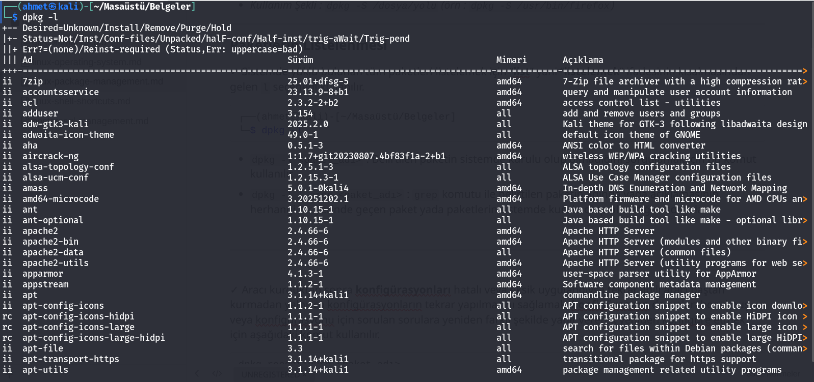
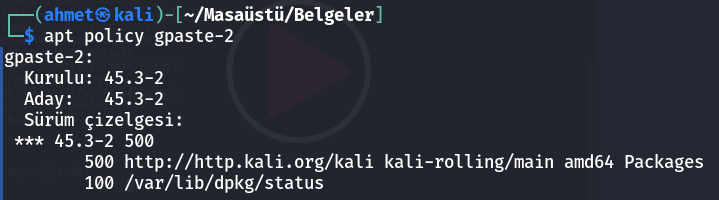

Paket Yönetimi
Son güncelleme : 02/2026
Paket yönetimi, sisteme yeni yazılımların yüklenmesi ve gerektiğinde var olanların güncellenmesi, yeniden konfigüre edilmesi veya silinmesi gibi işlemleri yönetir. Kullanmakta olduğumuz Linux dağıtımına bir yazılım yüklemek istediğimizde en kolay yöntem paket yönetim aracını kullanmaktır. Çünkü yazılımlar ilgili dağıtıma kolayca kurulup yönetilebilsin diye geliştiriciler tarafından yazılımın tüm dosyaları tek bir paket olarak bize sunuluyor. Bizler de bu paketler üzerinden ilgili yazılımları kolayca kurup yönetebiliyoruz. Dağıtımların genel olarak birbirlerinden ayrıştığı noktanın, başta paket yönetim araçları olmak üzere dağıtımlarda varsayılan olarak yüklü bulunan araçlardır. Debian tabanlı dağıtımlarda apt aracı kullanılır.
Çeşitli araçların mevcut dağıtımda sorunsuzca çalıştırılabilir güvenli paketlerini sunmak, dağıtımların en temel sorumluluklarının başında geliyor. Çünkü bizler sistemi yönetirken aslında sisteme yüklediğimiz araçları kullanıyoruz. Eğer aradığımız araçların güncel güvenilir ve stabil sürümlerine kolay erişemiyorsak ilgili dağıtımı kullanmak için bir sebep kalmıyor. Her bir kullanıcının bireysel olarak paket yönetimi ile boğuşması verimlilik açısından kesinlikle sürdürülebilir ve mantıklı değildir. Özellikle işletmeler güvenli ve güncel paket depolarına sahip olmayan dağıtımları kullanmayı kesinlikle istemezler. Dağıtımların en önemli sorumluluklarından biri de kullanıcılarına yazılımların tüm bağımlılıklarıyla birlikte güvenilir ve güncel paketlerin bulunduğu bir repo sunmaktır. Bu sayede bizler ekstra çaba sarf etmeden istediğimiz yazılımı mevcut sistemimize güvenli şekilde kurabiliyoruz.
Debian Tabanlı Sistemlerde Paket Yönetimi
» dpkg
Yalnızca indirmiş olduğumuz yani lokal olarak bilgisayarımızda mevcut olan “.deb” uzantılı paketleri kurabiliyoruz. Bu paketin, daha doğrusu kurduğumuz aracın çalışması için gereken harici paketler dpkg tarafından bulunup indirilmiyor. Bunu yapan apt aracıdır. Bizler dpkg aracını lokal paket yönetimi için kullanıyoruz. Yani bu durumda dpkg aracını kullanarak kurulum yapacaksak kurduğumuz paketin ihtiyaç duyduğu ek paketleri de tek tek bulup indirmemiz ve onları da dpkg aracını kullanarak kurmamız gerekiyor.
Paket Kurulumu
✓ Kurulum için dpkg aracının “install” yani “kurma” anlamına gelen i seçeneğinin ardından kurmak istediğimiz paketin ismini girmemiz gerekiyor. Paketin bulunduğu konumdan kurmak istediğimiz paketin ismini vererek aşağıdaki komutu çalıştırmalıyız.
xxxxxxxxxxdpkg -i <paket_adı.deb>Not : Aracın doğru şekilde çalışması için gereken ek paketler yani bağımlılıkları tek tek internetten indirip kurmamız gerekir.
▪ Kurulan paketin kurulum yerlerini detaylı görüntülemek için:
xxxxxxxxxxdpkg -L <paket_adı>Kurulu Paketin Kaldırılması
✓ Sistemimize kurmuş olduğumuz paketi silmek istersek dpkg aracının “remove” yani “silmek - kaldırmak” ifadesinin kısaltmasından gelen r seçeneği kullanılır.
xxxxxxxxxxdpkg -r <paket_adı>Not : Kaldırılan paket başka araç tarafından kullanılıyorsa hata alırız. Yine de diğer aracın bozulması pahasına paketi kaldırmak isiyorsanız
--force-allyani zorlama seçeneğini kullanarakdpkg --force-all -r <paket_adı>komutu ile ilgili paketi kaldırmaya zorlayabilirsiniz.
Kalıntıların Kaldırılması
✓ Aracın konfigürasyon dosyaları da dahil sistemden tamamen tüm dosyalarının kaldırılmasını istersek “purge” yani “arındırmak” anlamındaki P seçeneği kullanılır.
xxxxxxxxxxdpkg -P <paket_adı>Paket Hakkında Bilgi Almak
✓ Henüz paketi kurmadan önce paketin içeriği hakkında bilgi almak istersek (boyut, versiyon, bağımlılıkları vb...) “info” ifadesinin kısaltmasından gelen I karakteri kullanır.
xxxxxxxxxxdpkg -I <paket_adı.deb>▸ dpkg -S dosya_yolu (--search) komutu, bir dosyanın hangi debian paketi tarafından kurulduğunu bulmak için kullanılır.
Kullanım Şekli :
dpkg -S /dosya/yolu(örn :dpkg -S /usr/bin/firefox)
Paketlerin Listelenmesi
✓ Sistemde yüklü bulunan tüm paketleri listelemek için “list” yani “listelemek” ifadesinin kısalmasından gelen l seçeneği kullanılır.
xxxxxxxxxx└─$ dpkg -l
dpkg -l <paket_adı>: Belirtilen paketin sistemde kurulu olup olmadığını sorgulamak için bu komut kullanılır.
dpkg -l | grep <paket_adı>:grepkomutu ile belirtilen paketin adında yada açıklamasının herhangi bir yerinde geçen paket yada paketlerin sistemde kurulu olup olmadığını sorgular.

Paketin mevcut durumunu gösteren durum kodları aşağıdaki gibidir:
| Kod | Açılımı | Anlamı |
|---|---|---|
| ii | install installed | Her şey yolunda. Paket başarıyla yüklendi ve sistemde kurulu. |
| rc | remove conf_files | Paket silinmiş (removed) ancak yapılandırma (config) dosyaları hala sistemde duruyor. |
| un | unknown not-installed | Paket sistem tarafından biliniyor ama hiç kurulmamış. |
| hi | hold installed | Paket kurulu ancak güncellenmemesi için "beklemeye" (hold) alınmış. |
Kurulu Paketleri Yeniden Yapılandırma
✓ Aracı kurduktan sonra konfigürasyonları hatalı veya eksik uygulandıysa tekrar ilgili aracı baştan kurmadan yalnızca konfigürasyonların tekrar yapılmasını sağlamak, konfigürasyon dosyaları bozulmuş veya konfigürasyonu için sorulan sorulara yeniden farklı şekilde yanıt vererek yeniden konfigure etmek için aşağıdaki komut kullanılır.
xxxxxxxxxxdpkg-reconfigure <paket_adı>» apt
Apt aracının ismi, “advanced package tool” yani “gelişmiş paket aracı” ifadesinin kısaltmasından geliyor. apt aracı repolarda paket arama ve otomatik bağımlılık çözümleme gibi özellikleri ile paket yönetimini bizler için oldukça kolay hale getiren gelişmiş paket yönetim aracıdır. Bu araç dpkg aracına oranla, kullanıcının işlerini daha da kolaylaştırmak üzere geliştirilmiştir. apt aracı paketlerin uzak sunucundan bağımlılıkları ile birlikte indirip kurulmasını sağlıyor. Ve diğer paket yönetim işlerini de bu araç üzerinden gerçekleştirebiliyoruz. apt aracı aslında kurulum ve kaldırma gibi paket yönetimi işleri için arka planda dpkg aracını kullanıyor. apt aracının avantajı, kurmak istediğimiz aracın paketini repo üzerinden otomatik bulması ve bu aracın ihtiyaç duyduğu diğer ek paketleri yani bağımlılıklarını da çözümleyip bunları da bulup kurmasıdır. Bu sayede biz bağlandığımız uzak sunucu depolarında olduğu sürece istediğimiz aracı kolayca kurabiliyoruz. Zaten repolar da bir aracın kurulması için gereken tüm bağımlılıkları içerecek şekilde düzenlendiği için apt aracı bütüncül olarak bizlere oldukça kolay bir paket yönetim imkanı sunuyor.
➜ apt yönetimi için birden fazla yardımcı araç bulunuyor, örneğin bu araçlardan başlıcaları; apt-get apt-cache ve apt-file araçlarıdır. Kısaca açıklamamız gerekirse;
› apt-get: aracını, paketleri indirmek, kurmak, güncellemek ve silmek için kullanıyoruz.
› apt-cache: aracını, repolarda paket araştırması yapmak için kullanıyoruz.
› apt-file: aracını ise paketlerin içindeki dosyaları aramak için kullanıyoruz.
Ayrıca sık kullanılan
apt-getveapt-cachearaçlarını tek bir araçta birleştirenaptadlı bir yardımcı araç da bulunuyor. Yaniapt-getveapt-cachekomutları ile uzun uzadıya komut girmek yerine yalnızcaaptkomutu ile aynı işlevleri de yerine getirebiliyoruz.
Paket Listesinin Güncellenmesi
▸ apt-get update | apt update : Repolardaki paketler kurulmadan evvel en güncel index bilgisini almak için kullanılır. Yani paket listesinin en güncel halini alıyoruz.
▸ apt-get upgrade | apt upgrade : Yazılım paketlerini en güncel sürümlerine yükseltmek için kullanılır. Yani paketleri güncellemek için kullanıyoruz.
Eğer amacınız tüm paketleri değil de spesifik olarak bazı paketleri güncellemek ise, güncellemek istediğiniz paketi tekrar kurmak üzere
apt install <paket_adı>şeklinde komutunuzu girebilirsiniz. Bu sayede ilgili aracın en son sürümüne güncelleme yapılacaktır. Zatenaptaracı sistemde aynı isimli paket olduğunu fark edeceği için yalnızca ilgili paketi üst sürüme yükseltmeyi teklif ediyor.apt --only-upgrade install <paket_adı>komutu ile de tek bir paket güncelleyebilirsiniz.
Paketlerin Araştırılması
▸ apt-cache search <paket_adı> | apt search <paket_adı> : Depoda paket arama, yani bir paketi kurmadan önce ilgili paketin repoda hangi isimde tutulduğunu öğrenmek için kullanılır.
Paket Hakkında Ayrıntılı Bilgi
▸ apt-cache show <paket_adı> | apt show <paket_adı> : Paket hakkında ayrıntılı bilgi almamızı sağlar.
Paketlerin Kurulumu
▸ apt-get install <paket_adı> | apt install <paket_adı> : Depo üzerinden paketin bağımlılıkları ile beraber online kurulum yapmak için kullanılır.
Paketlerin Kaldırılması
▸ apt-get remove <paket_adı> | apt remove <paket_adı> : Sistemimize kurmuş olduğumuz paketi kaldırmak için kullanılır.
Not : Sistemdeki tüm paketleri tarar ve başka bir araç tarafından kullanılmayan, artık gerek duyulmayan bağımlılıklarının da kaldırılması için
apt autoremovekomutu kullanılır. Eğer bu komutun sonuna-yargümanını eklersem bana sorulmadan ilgili işlem gerçekleşmiş olacaktı.
▸ apt-get remove --purge <paket_adı> | apt purge <paket_adı> : Paketi ve konfigürasyon dosyalarını sistemden tamamen kaldırmak için.
🧨 apt remove sadece paketin kendisini kaldırır, ayar dosyalarını bırakır.
xxxxxxxxxxsudo apt remove <paket_adı>→ Paket silinir
→/etc/paket_adı/gibi ayar dosyaları kalır
🧹 apt remove --purge komutu, paketi ve tüm ayar/config dosyalarını beraber siler.
xxxxxxxxxxsudo apt remove --purge <paket_adı>✔ Paket kaldırılır
✔ /etc/, /var/ altındaki konfigürasyonlar temizlenir
✔ Kullanıcı ayar dosyalarının çoğu silinir
✔ Sistem, o paket yüklenmemiş haline döner
🔥 purge Bazı bozuk paketlerde veya çakışmalarda “purge” kullanılır.
Bozuk GNOME eklentileri
Yanlış tema paketleri
Config bozan programlar
Kalan ayarlar nedeniyle tekrar kurulamayan paketler
xxxxxxxxxxsudo apt purge <paket_adı>→ tüm sorunları sıfırlar.
🛑 Dikkat etmen gereken tek şey purge evdeki dosyaları silmez, sadece programın sistem ayarlarını siler.
Güvenlidir ama şu paketleri purge etme:
❌ systemd
❌ kali-desktop-*
❌ linux-image-* (kernel)
❌ apt veya dpkg
❌ python3 (sistem bileşeni)
🧹 Kullanılmayan bağımlılıkları silmek için:
xxxxxxxxxxsudo apt autoremove
Artık hiçbir paket tarafından kullanılmayan bağımlılıkları temizler
Gereksiz kütüphaneleri siler
Sistemi hafifletir
🎯 Genelde önerilen sıralama:
xxxxxxxxxxsudo apt remove --purge <paket_adı>sudo apt autoremove⚡ autopurge kullanmak çoğu durumda güvenlidir ve autoremove + purge ile aynı işi tek adımda yapar.
xxxxxxxxxxsudo apt remove --purge <paket_adı>✔ Paketin kendisini + paketin kendi config dosyalarını siler. Ancak bağımlılıkları silmez.
xxxxxxxxxxsudo apt autoremove✔ Artık kullanılmayan bağımlılık paketlerini siler fakat bu bağımlılıkların ayar dosyaları kalır (yani sadece
removeyapar,purgedeğil).
› Bu yüzden sistemde zamanla “config dosyaları” birikebilir.
xxxxxxxxxxsudo apt autopurge✔ Bu komut,
autoremove + purgebirleşimidir.
Yani:
✓ Artık kullanılmayan bağımlılıkları kaldırır
✓ Onların config dosyalarını da siler
✓ autopurge yalnızca otomatik kurulan (“auto-installed”) ve şuan kullanılmayan paketlere işlem yapar. Bu yüzden yanlış paketi silmez, tıpkı autoremove gibi güvenlidir.
🌿 Güvenli tercih
xxxxxxxxxxsudo apt remove --purge <paket_adı>sudo apt autoremove🌿 Temiz sistem
xxxxxxxxxxsudo apt remove --purge <paket_adı>sudo apt autopurgeBozuk paketleri tespit etmek, düzeltmek ve temizlemek için kullanılan komutlar.
🔍 1. Bozuk Paket Var mı Kontrol Et.
xxxxxxxxxxsudo apt --fix-broken install➡ Bozuk veya yarım kalmış paket varsa gösterir ve düzeltir.
🔎 2. Kırık Bağımlılıkları Kontrol Et
xsudo dpkg --configure -a➡ Yarım kalan kurulumları tamamlar.
📦 3. Eksik veya Kırık Dosyaları Tespit Et (detaylı)
xsudo apt install -f➡ Eksik bağımlılık varsa otomatik kurar.
🗂 4. Depoda “tutulmuş” yani kilitli paket var mı?
xapt-mark showhold➡ Burada bir şey çıkıyorsa, paket güncellenemiyordur.
🧹 5. Bozuk / Artık Kullanılmayan Paketleri Listele
xsudo apt autoremove --purge➡ Bu kaldırma işlemi yapar ama listelemeden kaldırmaz, önce liste görmek istersen:
xsudo apt autoremove --dry-run
🛑 6. Depolardaki tutarsızlık hatalarını kontrol et
xsudo apt update --fix-missing
🧰 7. APT’nin Cache’inde bozuk .deb dosyası var mı?
xsudo apt cleansudo apt update
🛡 Bi paketi yüklemeden önce güvenli olup olmadığı, hangi repoda bulunduğu gibi bilgiler şu komutla kontrol edilir.
xxxxxxxxxxapt policy <paket_adı>
✔ Kurulu: 45.3-2 Sistemde şu an yüklü olan sürüm.
📌 2. "Aday: 45.3-2"
Depoda yüklenebilecek sürüm de aynı → güncel versiyon.
📌 3. "500 http://http.kali.org/kali kali-rolling/main"
Bu gösteriyor ki:
Paket resmi kali deposundan geliyor
main deposunda → resmi, güvenilir yazılımlar
kali-rolling sürümü için uygun
📌 4. "100 /var/lib/dpkg/status"
Bu, paketin sistemde kayıtlı olduğunu gösteriyor.
📌 Sonuç olarak:
gpaste-2paketinin kaynağı ve sürümü tamamen temiz.
➡ Örnek:
sudo apt policy gnome-shell-extension-gpaste✔ Paket Güvenli mi?
Evet, %100 güvenli, Çünkü:
📌 1. "Kurulu: (hiçbiri)"
Sende şu an yüklü değil.
📌 2. "Aday: 45.3-2"
Depoda yüklenebilir olan güncel sürüm bu.
📌 3. "http://http.kali.org/kali kali-rolling/main"
Bu da paketin resmi Kali deposundan geldiğini gösteriyor. main deposu = test edilip onaylanmış paketler.
apt --fix-broken install|apt-get install -f: APT'yi mevcut kırık paketleri düzeltmeye ve farkında olmadan bozduğumuz ya da sildiğimiz paketleri gerekirse eksik bağımlılıkları yüklemeye yönlendirir, bağımlılıkları çözülmemiş veya eksik olan paketleri belirleyip tekrar yükler.
apt-get dist-upgrade: Komutu ile sistemde yüklü bulunan bir paketin bağımlılıkları arttıysa veya azaldıysa güncelleme yapılırken aynı zamanda varsa yeni paketlerin kurulması ve ayrıca artık gerekli olmayan paketlerin de kaldırılması mümkün oluyor.Not :
apt full-upgradekomutu sayesindede güncelleme esnasında bağımlılık sorunlarının ilgili paket için otomatik olarak çözülmesi sağlanır.
🧹 Gereksiz Paketlerin Silinmesi
▪ İndirilen paketler daha sonra tekrar kullanılma ihtimaline karşı diskte tutuluyorlar. Yani biz bir aracı kurmak için komut girdiğimizde o aracın paketi tekrar kullanılmak üzere diskte tutuluyor. Bu paketler /var/cache/apt/archives/ dizini altında tutuluyor. Bunları silmek için de yine apt aracını kullanabiliriz. Eğer apt-get clean ya da apt clean komutlarını kullanırsak bu paketlerin hepsi silinmiş olacak.
▪ Eğer indirmiş olduğumuz .deb uzantılı paketi apt aracı ile kurarsak, internet bağlantımız da olduğu için apt aracı bu paketin bağımlılıklarını da otomatik çözümleyip kuracak. Yani lokal olarak bulunan paketleri dahi apt aracı ile kurabiliyoruz.
xxxxxxxxxxapt install ~/Downloads/<paket_adı.deb>▪ apt-cache depends <paket_adı> : Paketin çalışması için gerekli olan bağımlılıkları listeler.
▪ .deb dosyasını kurmadan bağımlılıkların sistemde eksik olup olmadığını kontrol etmek için:
xxxxxxxxxxsudo apt-get install -f ./<paket_adı.deb> --dry-run
--dry-run: Kurulum yapmaz, sadece simülasyon yapar.Eksik bağımlılıkları listeler.
▪ Bağımlılık ağacını detaylı görüntülemek için aşağıdaki komut kullanılır.
xxxxxxxxxxdebtree ./<paket_adı.deb>
apt list|apt-cache pkgnames: Depodaki mevcut tüm paketleri listeler.apt list --upgradable: Sistemdeki güncellenebilir paketleri listeler.
apt download <paket_adı>: İsmi verilen paketi repodan bulunduğun konuma kurmadan indirme işlemi yapar.
✅ apt install <paket_adı> -d komutu ne yapar?
Bu komut:
✔ Paketi ve tüm bağımlılıklarını sadece indirir
.debdosyalarını /var/cache/apt/archives/ klasörüne koyarFakat kurulum yapmaz
Sistemde hiçbir dosya değişmez
Yani offline kurulum için paketleri önceden indirme komutudur.
📌 Kullanım örneği
xxxxxxxxxxsudo apt install golang-go -dBu:
golang-gopaketiniBağımlılıklarını
Gerekirse ekstra önerilen paketleri
sadece indirir.
📁 Her şey şu klasöre gider:
xxxxxxxxxx/var/cache/apt/archives/Bu klasörde .deb dosyaları durur.
▶️ Peki sonra nasıl kurarım?
İki yol var:
1) İnternet yokken apt kurar:
xxxxxxxxxxsudo apt install golang-goApt, “zaten önceden indirilmiş” diyerek yeniden indirmez.
2) Direkt .deb ile kurarsın:
xxxxxxxxxxsudo apt install ./golang-go_*.deb🚫 Ne yapmaz?
-d şunları yapmaz:
Paketi kurmaz
Config dosyası yazmaz
Hizmet başlatmaz
Sisteme hiçbir şey eklemez
🎯 Sonuç
apt install <paket_adı> -d = “Paketi depodan indir ama kurmaz.”
Kaynak Listesi
APT aracının doğru paketleri bulabilmesi için, APT aracının ilgili repo adreslerini biliyor olması gerekir. İşte bu repo adresleri sistem üzerindeki “sources.list” yani “kaynak listesi” dosyasında belirtiliyor. APT aracı bu kaynak listesine bakıp sorgulama yapacağı repo adreslerini öğreniyor.
Debian tabanlı dağıtımlarda kaynak listesi
/etc/aptdizini altındakisources.listisimli dosyadır. Bu dosyada apt aracının paketleri edinmek için hangi adreslere bakması gerektiğini belirten bağlantılar vardır. Yani repoların adresi busources.listdosyası içinde tanımlanmıştır.
Debian/Kali/Ubuntu için “LOCAL REPO (yerel depo)” oluşturma adımları
✅ LOCAL REPO (dpkg-scanpackages)
Bu yöntem APT’nin anlayacağı basit bir depo oluşturur.
İstediğin .deb dosyalarını bir klasöre koyarsın → APT bunu depo gibi görür.
➤ 1. Klasör oluştur
xxxxxxxxxxmkdir -p ~/localrepo➤ 2. Eklemek istediğin .deb dosyalarını bu klasöre koy
Örnek:
xxxxxxxxxxcp paket1.deb paket2.deb ~/localrepo/➤ 3. Depoyu oluşturmak için gerekli araçları yükle
xxxxxxxxxxsudo apt install dpkg-dev➤ 4. Packages dosyasını oluştur (APT’nin okuduğu index)
xxxxxxxxxxcd ~/localrepodpkg-scanpackages . /dev/null | gzip -9c > Packages.gzSonuç:
~/localrepo/ içinde Packages.gz oluşur → APT’nin görmek istediği şey.
➤ 5. Bu repo’yu APT kaynaklarına ekle
Bir repo kaynağı dosyası oluştur:
xxxxxxxxxxsudo nano /etc/apt/sources.list.d/localrepo.listİçine şunu yaz:
xxxxxxxxxxdeb [trusted=yes] file:///home/ahmet/localrepo ./
[trusted=yes]→ GPG imzası gerekmesin diye.
Kaydet.
➤ 6. APT’yi güncelle
xxxxxxxxxxsudo apt updateVe artık sistem senin klasörü depo gibi görüyor.
➤ 7. Paketi normal apt komutu ile kur
Örneğin:
xxxxxxxxxxsudo apt install paket1APT artık .deb dosyasını internet yerine yerel repo’dan alır.
⛳ EN ÖNEMLİ NOT
Her yeni .deb eklediğinde tekrar şu komutu çalıştırırsın:
xxxxxxxxxxcd ~/localrepodpkg-scanpackages . /dev/null | gzip -9c > Packages.gzAPT listeyi günceller ve yeni paketi görür.
Red Hat Tabanlı Dağıtımlarda Paket Yönetimi
Debian tabanlı dağıtımlarda kullandığımız
dpkgveaptaraçlarının Red Hat tabanlı dağıtımlardaki karşılığı sırasıylarpmveyumaraçlarıdır. Debian tabanlı dağıtımlar için hazırlanmış olan paketler.debuzantılı iken, Red Hat tabanlı dağıtımlar için hazırlanmış olan paketler.rpm..rpmuzantılı paketleri yönetmek için derpmaracını kullanıyoruz.rpmaracı tıpkıdpkgaracı gibi paketlerin lokal olarak yönetilebilmesini sağlıyor.yumaracı ise tıpkıaptaracı gibi repolar üzerinden paketlerin ve bağımlılıkların kolayca yönetilebilmesini sağlıyor.yumaracı da aslında arkaplandarpmaracını kullanarak repolardan paketlerin bulunması bağımlılıkların otomatik olarak çözümlenmesi gibi pek çok faydalı işlevi sunan üst seviyeli bir paket yönetim aracıdır.
Kurulu tüm paketleri görmek için:
xxxxxxxxxxrpm -qa | less
rpm -i <paket_adı.rpm>: Lokalde var olanrpmuzantılı bir paketi kurmak için kullanılır.
Sistemde kurulu olan bir paketi kaldırmak için
rpmkomutunun-eseçeneğinden sonra ilgili paketin ismini girmemiz yeterli. Buradakieseçeneği “erase” yani “silmek” ifadesinin kısaltmasıdır.
Eğer işlemler hakkında detaylıca çıktı almak istersek “verbose” ifadesinin kısaltması olan
vseçeneğini kullanabiliriz. Eğer bu seçeneği eklemezseniz araç silinir ancak herhangi bir çıktı almazsınız.
YUM ve DNF
yumaracı tıpkıaptaracı gibi paketlerin bulunması, kurulması, bağımlılıklarının otomatik olarak çözümlenmesi, güncellenmesi, kaldırılması gibi paket yönetimi işlerini bizler için kolay hale getiren Red Hat tabanlı dağıtımlarda kullanılan kararlı yapıdaki paket yönetim aracıdır. Fakat bu aracın daha gelişmiş versiyonu olandnfaracını öğrenmek daha makul bir yaklaşım olacaktır.
Repolardaki paketlerde araştırma yapmak için
dnf search <paket-adı>komutu kullanılır.
Depodan paket kurmak için
dnf install <paket-adı>şeklinde komut girebiliyoruz.
dnf check-update: Sistemde kurulu paketlerin güncellemelerini kontrol etmek için kullanılır. Tüm paketleri kontrol etmek yerine dilersekcheck-updatekomutundan sonra paket ismi girip spesifik paket güncellemesini de kontrol edebiliriz.
Eğer yalnızca kontrol etmek yerine güncellemelerin yüklenmesini de istiyorsak
dnf updatekomutunu kullanabiliyoruz.Spesifik olarak tek bir paketi güncellemek istersek
sudo dnf install <paket-adı>komutu ile varsa ilgili aracın güncelleştirilmesini sağlayabiliriz.
dnf remove <paket-adı>: Paket kaldırmak için bu komut kullanılır.
Gereksiz paketler kurulmak üzere indirilen ve artık ihtiyaç duyulamayan paketlerin silinmesi için
sudo dnf clean allkomutunu kullanabiliyoruz.
Alien komutu ile deb/rpm paket dönüşümü yapılabilmektedir. Bir yazılımın
rpmpaketi var fakatdebformatında paketi yoksaalienkomutu sayesinderpmpaketindendebpaketine dönüşüm yapılabilir. Tam tersi olarakdebpaketinden derpmpaketi yapılabilmektedir.
| İşlem | Komut | Açıklama |
|---|---|---|
.deb → .rpm dönüştürme | sudo alien -r paket.deb veya sudo alien -cr paket.deb | -r rpm üretir, -c scriptleri korur |
.rpm → .deb dönüştürme | sudo alien -d paket.rpm veya sudo alien -cd paket.rpm | -d deb üretir, -c scriptleri korur |
Kaynak Koddan Derleyerek Kurulum
Kuracak olduğumuz yazılımın
.tar.gzuzantılı arşiv dosyasını temin etdikten sonra dosyayı klasöre çıkarıyoruz. Burada “README” ve “INSTALL” gibi isimlerde metin dosyaları bulunuyor. İstisnalar hariç neredeyse tüm araçların kaynak kodlarında, aracın kurulumu ve konfigürasyonları ile ilgili bilgi sunan bu tür dosyalar zaten geliyor. Genel olarak kurulumu ele alıyorum ancak daha önce de söylediğim şekilde en doğru bilgiyi geliştiricinin sunduğuinstallveyareadmegibi dosyalardan öğrenebilirsiniz. Burada listelenen dosyalar elbette ilgili yazılıma göre değişiklik gösterir. Ancak genel olarak bilgi içeren metin dosyalarının yanında kurulum için ön ayarlamaları yapanconfiguredosyası ve kurulum işlemini kolaylaştıran genellikleinstall.shisminde kurulum betiği ile karşılaşırsınız. Konfigürasyonlar içinconfiguredosyasını çalıştırıyoruz. Ayrıca buradakimakefiledosyaları da gerekli konfigürasyon ayarlamaları yapıldıktan sonra ilgili aracın derlenip kurulması için kullanılıyor.
İlk olarak sıkıştırılmış dosyayı açıyoruz. Açılan klasörün içine girip, orada ilk olarak
./configurekomutu ile "configure" dosyasını çalıştırıyoruz.
İlk olarak konfigürasyon dosyasını çalıştırdığımız için mevcut sistemin derleme işlemine uygun olup olmadığı kontrol ediliyor. Dolayısıyla uyumlu değilse hata çıktısında belirtilen uyarıları araştırıp çözdükten sonra derleme adımlarına devam etmelisiniz.
Bu işlem sonucunda bulunulan dizinde inşa işleminin nasıl yürüyeceğini tarif eden
Makefileadlı bir dosya oluşur.
makekomutu ile derleme işlemini gerçekleştiyoruz.
Burada aslında
./configurekomutu ile oluşanMakefileadlı dosyayımakeadlı bir program aracılığıyla çalıştırmış oluyoruz.makebir sistem komutudur. Bu komutu yukarıdaki gibi parametresiz olarak çalıştırdığımızdamakekomutu, o anda içinde bulunduğumuz dizinde birMakefiledosyası arar ve eğer böyle bir dosya varsa onu çalıştırır. Eğer bir önceki adımda çalıştırdığımız./configurekomutu başarısız olduysa, dizinde birMakefiledosyası oluşmayacağı için yukarıdakimakekomutu da çalışmayacaktır. O yüzden derleme işlemi sırasında verdiğimiz komutların çıktılarını takip edip, bir sonraki aşamaya geçmeden önce komutun düzgün sonlanıp sonlanmadığından emin olmamız gerekiyor.
makekomutunun yaptığı iş, programın sisteminize kurulması esnasında sistemin çeşitli yerlerine kopyalanacak olan dosyaları inşa edip oluşturmaktır.Şimdi derlenmiş olanları kurmak için
sudo make installkomutunu girmeliyiz.
Kuracak olduğumuz programın eski sürümü de sistemde kalsın istiyorsak
make installyerinemake altinstallkomutu kullanılır.make altinstallkomutu, program kurulurken klasör ve dosyalara sürüm numarasının da eklenmesini sağlar. Böylece yeni kurduğunuz program, sistemdeki eski sürümü silip üzerine yazmamış olur ve iki farklı sürüm yan yana varolabilir. Eğermake altinstallyerinemake installkomutunu verirseniz sisteminizde zaten varolan eski bir sürüme ait dosya ve dizinlerin üzerine yazıp silerek o sürümü kullanılamaz hale getirebilirsiniz.Kurulum için derlenmiş ama artık ihtiyaç duymadığımız dosyaları
make cleankomutu ile temizleyebiliriz.
Kaynak koddan kurulum yaparken
--prefixparametresiyle programı istediğin yere kurabilirsiniz:
xxxxxxxxxx./configure --prefix = $HOME/makesudo make installLinux’ta programın sisteme nasıl kurulduğuna göre dosyalar farklı dizinlere gider.
🧩 1.Depodan (APT, DNF vs.) Kurulan Programlar:
xxxxxxxxxxsudo apt install <paket_adı>🔹 Bu programlar paket yöneticisi tarafından sistem standart dizinlerine kurulur:
| Tür | Dizin | Açıklama |
|---|---|---|
| Çalıştırılabilir dosyalar | /usr/bin/ veya /bin/ | Terminalden program-adı yazınca çalışan dosya burada olur |
| Kütüphaneler | /usr/lib/ veya /lib/ | Paylaşılan .so dosyaları |
| Yapılandırma dosyaları | /etc/ | Sistem genel ayar dosyaları |
| Veri / kaynak dosyaları | /usr/share/ | İkonlar, temalar, yardım dosyaları |
| Man sayfaları | /usr/share/man/ | man program-adı komutu için içerikler |
💡 Paket yöneticisi (ör.
apt,dnf) tüm dosyaları bilir, bu yüzden kaldırmak için:
xxxxxxxxxxsudo apt remove <paket_adı>📦 2..deb Dosyasından Kurulan Programlar:
xxxxxxxxxxsudo dpkg -i <paket_adı.deb>🔹 .deb paketleri de aynı dizin yapısını kullanır, çünkü dpkg sistemin kendi paket yöneticisidir. Yani genelde yine şu klasörler kullanılır:
/usr/bin/→ çalıştırılabilir dosyalar/usr/share/→ ikonlar, dil dosyaları/usr/lib/→ kütüphaneler/etc/→ ayarlar
💡
.debdosyası sistemde hangi dosyaları nereye koyduğunu görmek için:xxxxxxxxxxdpkg -c <paket_adı.deb>veya kurulduktan sonra:
xxxxxxxxxxdpkg -L <paket_adı>
⚙️ 3.Kaynak koddan (örneğin ./configure && make && make install adımlarıyla) derleyip kurduğun programlar:
xxxxxxxxxx./configuremakesudo make install🔹 Bu yöntem sistem paket yöneticisini bypass eder (haber vermez), bu yüzden nereye kurulduğunu manuel takip etmek gerekir. Varsayılan dizinler genelde:
| Tür | Dizin | Açıklama |
|---|---|---|
| Çalıştırılabilir dosyalar | /usr/local/bin/ | Sistemdeki kullanıcı yazılımları için ayrılmıştır |
| Kütüphaneler | /usr/local/lib/ | |
| Ayarlar | /usr/local/etc/ | |
| Veri / kaynak dosyaları | /usr/local/share/ |
🔹 Kurulum dizininde uninstall varsa yani Makefile içinde bir uninstall hedefi varsa kurulan dosyaları aşağıdaki komut sistemden kaldırır.
xxxxxxxxxxsudo make uninstall📁 Genellikle kaynak koddan derlenen programlar
/usr/local/altına kurulur. Kurarken hangi dosyalar nereye gittiğini görmek için:
xxxxxxxxxxsudo make install > install.log🧠 Eğer program sudo make install komutu yerine sudo checkinstall komutu ile kurulduysa (yani .deb paketi oluşturup yükler dolayısıyla yazılım paket yöneticisine kayıt olur, aşağıdaki komutla kaldırabilirsiniz):
xxxxxxxxxxsudo apt remove <paket_adı>🔹 Bu yöntem Debian/Pardus/Ubuntu tabanlı sistemlerde çok daha kontrollüdür, çünkü sistem paket yöneticisine kaydedilir.
Linux’ta kurulu bir programın hangi paket ile kurulduğunu öğrenmek için:
Programın Yolunu Bulma
xxxxxxxxxxwhich program_adıveya
xxxxxxxxxxwhereis program_adıÖrnek:
xxxxxxxxxxwhich nginx# /usr/sbin/nginxBu yol, paketi bulmak için ana girdidir.
Debian / Ubuntu / Kali (apt / dpkg)
Dosya Hangi Pakete Ait?
xxxxxxxxxxdpkg -S /usr/sbin/nginx
Çıktı:
xxxxxxxxxxnginx-core: /usr/sbin/nginx
Paket Kurulu mu?
xxxxxxxxxxdpkg -l | grep nginx
Paket Bilgisi
xxxxxxxxxxapt show nginx
Red Hat / CentOS / Fedora (dnf / rpm)
xxxxxxxxxxrpm -qf /usr/sbin/nginx
Paket detayları:
xxxxxxxxxxrpm -qi nginx